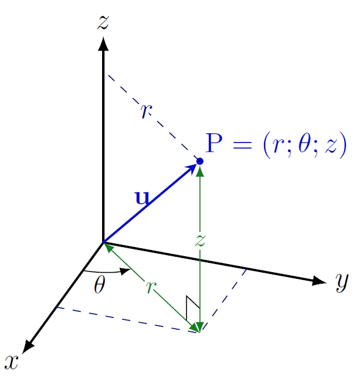
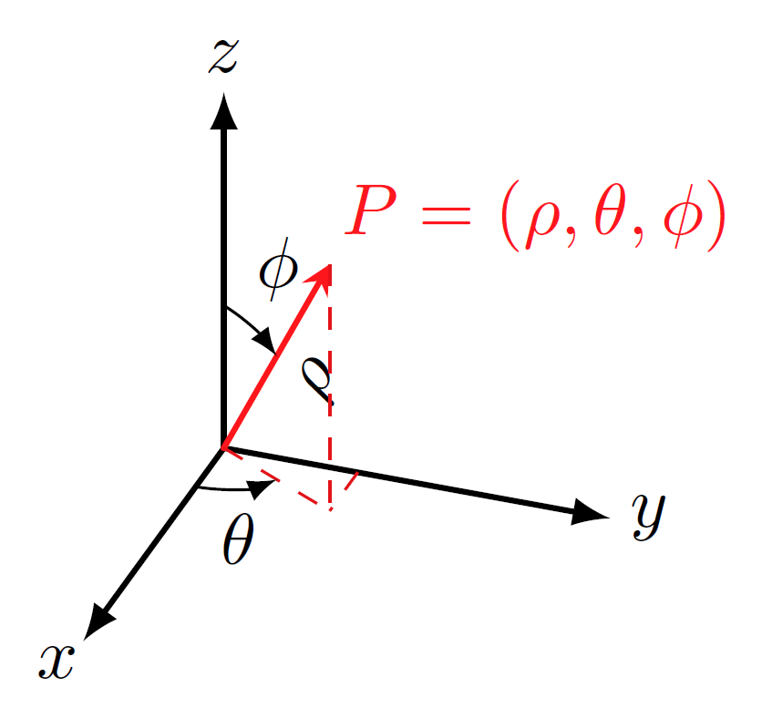

Jonathan Crofts
Nottingham Trent University
Lecturer: Dr Jonathan Crofts
Mary Anne Evans: Room 303
Email: jonathan.crofts@ntu.ac.uk
Lecture: 11-12, Thursday ERD 161
Seminars: Groups M1, P 13-14, Thursday CTLB P07
Group M2 14-15, Thursday CTLB P08
9:00-10:00 Monday
A vector is a three-dimensional object defined by its magnitude and direction
The magnitude of a vector $\displaystyle \mathbf{u} = \begin{pmatrix}u_1&u_2&u_3\end{pmatrix}$ is denoted by
\[ |\mathbf{u}| = \sqrt{u_1^2+u_2^2+u_3^2}. \]Vector addition is performed component-wise and best understood through a picture
Recall that a useful way to remember how to compute the cross product is
\[ \color{red}{\boxed{\color{white}{ \begin{align*} \mathbf{u}\times\mathbf{v} = \mathrm{det}\begin{pmatrix}\mathbf{i}&\mathbf{j}&\mathbf{k}\\u_1&u_2&u_3\\v_1&v_2&v_3\end{pmatrix} &= \begin{vmatrix}u_2&u_3\\v_2&v_3\end{vmatrix}\mathbf{i}-\begin{vmatrix}u_1&u_3\\v_1&v_3\end{vmatrix}\mathbf{j}+ \begin{vmatrix}u_1&u_2\\v_1&v_2\end{vmatrix}\mathbf{k}\\ &=\begin{pmatrix}u_2v_3-u_3v_2&u_3v_1-u_1v_3&u_1v_2-u_2v_1\end{pmatrix} \end{align*}}}} \]Find a vector perpendicular to the plane passing through the origin that is spanned by the two vectors $\mathbf{u}=(1,1,1)$ and $\mathbf{v} = (1,2,1)$
We can use the following equation of a plane to determine a formula in cartesian coordinates:
\[ \color{red}{\boxed{\color{white}{ \mathbf{n}\cdot\mathbf{r} = a \quad a\in\mathbb{R}}}} \]Here, $\mathbf{n}$ is a vector normal to the plane and $\mathbf{r}=(x , y, z)$ is a general point on the plane
It follows that
\[ \mathbf{n}\cdot\mathbf{r} = \begin{pmatrix}-1&0&1\end{pmatrix}\cdot \begin{pmatrix}x&y&z\end{pmatrix} = a \]or
\[ z-x = a \]Now, since the plane passes through $\begin{pmatrix}0& 0 &0\end{pmatrix}$ it easy to see that $a=0$ and that the plane is given by \[ z-x=0 \]
The picture is as follows:
Here we show the plane $z-x=0$ and the normal vector $\mathbf{n}=\begin{pmatrix}-1&0&1\end{pmatrix}$
In two-dimensional space we typically employ either a standard Cartesian representation or polar coordinates
The two systems are related by a mapping $T$ as follows
\[ \color{#00FF00}{\boxed{\color{white}{ (x, y) = T(r, \theta) = \begin{pmatrix}r\cos(\theta)&r\sin(\theta)\end{pmatrix}}}} \]$T$ is a map from the strip
\[ S = \left\{(r, \theta) ~|~ 0\leq r <\infty, ~0\leq \theta <2\pi\right\} \]to $\mathbb{R}^2$
The figure shows a polar coordinate system in 2D
Replace the following polar equations by equivalent Cartesian equations
1. Since $x=r\cos\theta$, the Cartesian equation is
\[ \color{#00FF00}{\boxed{\color{white}{ x = -4}}} \] the graph of which is the vertical line passing through -4 on the $x$-axis2. Since $r^2=x^2+y^2$ and $x=r\cos\theta$ we have
\[ x^2+y^2 = 4x \]or after completing the square in $x$:
\[ \color{#00FF00}{\boxed{\color{white}{ (x-2)^2+y^2 = 4}}} \]This is a circle of radius 2 centred at $(2, 0)$
3. We can rewrite this as
\[ r\left(2\cos\theta-\sin\theta\right) = 4 \]or
\[ \color{#00FF00}{\boxed{\color{white}{ 2x-y=4 \implies y = 2x-4}}} \]This is the graph of a straight line with slope 2 and $y$-intercept -4
The standard basis vectors:
\[ \mathbf{i}=\begin{pmatrix}1&0&0\end{pmatrix},\quad\mathbf{j}=\begin{pmatrix}0&1&0\end{pmatrix}, \quad\mathbf{k}=\begin{pmatrix}0&0&1\end{pmatrix} \]Any vector can be written as a linear combination of these three vectors i.e. they are basis vectors
\[ \mathbf{u} = \begin{pmatrix}u_1&u_2&u_3\end{pmatrix} = u_1\mathbf{i}+u_2\mathbf{j}+u_3\mathbf{k} \]Geometrically, we see that
Aside from Cartesian coordinate systems, there are two other common choices ...
In cylindrical coordinates we have
\[ \color{red}{\boxed{\color{white}{ \begin{pmatrix}x\\y\\z\end{pmatrix}=T(r,\theta,z)=\begin{pmatrix}r\cos(\theta)\\r\sin(\theta)\\z\end{pmatrix}}}} \]Here, $r$ and $\theta$ are polar coordinates of the vertical projection of $\begin{pmatrix}x&y&z\end{pmatrix}$ on to the $xy$-plane
Geometrically, the picture is as follows
In spherical coordinates we have
\[ \color{red}{\boxed{\color{white}{ \begin{pmatrix}x\\y\\z\end{pmatrix}=T(\rho, \phi, \theta)=\begin{pmatrix}\rho\cos(\theta)\sin(\phi) \\\rho\sin(\theta)\sin(\phi)\\\rho\cos(\phi)\end{pmatrix}}}} \]Here, $\rho$ is the distance of the point $\begin{pmatrix}x&y&z\end{pmatrix}$ from the origin, $\theta$ is the angle from the positive $z$-axis, and $\phi$ is the angle from cylindrical coordinates
Geometrically, the picture is as follows
Find a spherical coordinate equation for
1. Recall that
\[ x=\rho\sin\phi\cos\theta,\quad y=\rho\sin\phi\sin\theta,\quad z=\rho\cos\phi \]Substituting for $x, y, z$ we get
\[ \begin{align*} \rho\cos\phi &= \sqrt{\rho^2\sin^2\phi\cos^2\theta+\rho^2\sin^2\phi\sin^2\theta}\\ &=\sqrt{\rho^2\sin^2\phi} \end{align*} \]2. As above, substitute for $x, y, z$:
\[ \begin{align*} x^2+y^2+(z-1)^2&=1\\ \rho^2\sin^2\phi\cos^2\theta+\rho^2\sin^2\phi\sin^2\theta+\left(\rho\cos\phi-1\right)^2&=1\\ \rho^2\sin^2\phi\left(\cos^2\theta+\sin^2\theta\right)+\rho^2\cos^2\phi-2\rho\cos\phi+1&=1 \end{align*} \]Or
\[ \rho^2\left(\sin^2\phi+\cos^2\phi\right) = 2\rho\cos\phi \] so that \[ \rho^2=2\rho\cos\phi \implies \color{magenta}{\boxed{\color{white}{\rho=2\cos\phi}}} \]